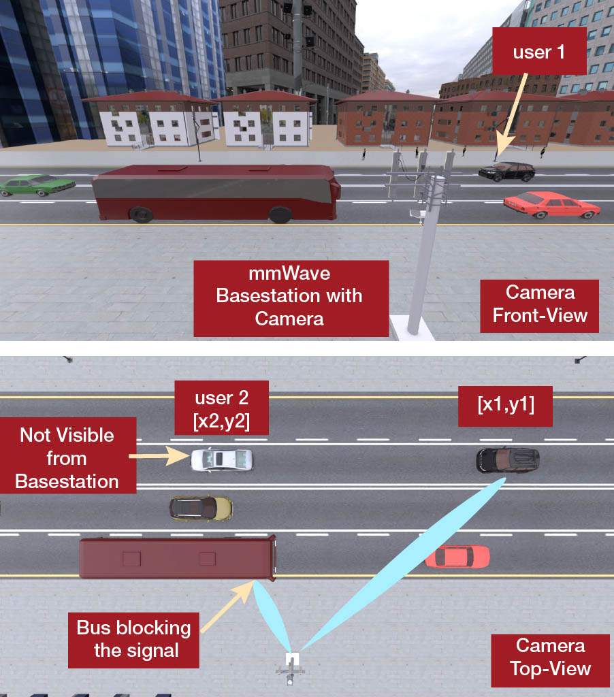
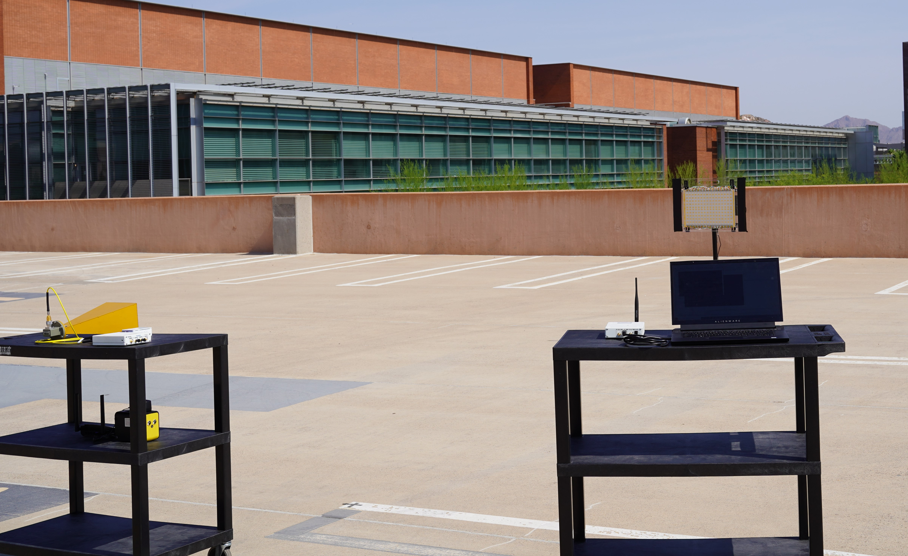

I am a PhD student at the Arizona State University, supervised by Professor Ahmed Alkhateeb. I completed my MSE in Electrical Engineering at Arizona State University in May 2021. I am currently a graduate research assistant at Wireless Intelligence Lab.
My research interests include (but are not limited to!):
- Machine Learning in Wireless Communication
- Vision-Aided Models for Beam training
- Wireless Communication Channnel estimation and modelling
Some of the technical course I have enrolled in are:
- Communication Systems (EEE 455/591)
- Digital Signal Processing (EEE 407/591)
- Digital Communication (EEE 552)
- Python for Rapid Engineering Solution including Machine learning (EEE 498/591)
- Digital Circuit Design with Cadence (EEE 425)
- Communication Networks (EEE 459/591)
- Randon Signal Theory (EEE 554)
Before starting MSE, I was a transfer undergraduate student at Ira.A Fulton School of Engineering under 3+1+1 International Accelerated Degree Program (IADP). I did my BSC Electrical and Electronic engineering at Ashesi University in Ghana, Accra.
In my spare time I enjoy playing Soccer matches, watching comedy, and watching YouTube channels Documentary.
Conference papers
April 13, 2022
WCNC2022
Vision-Position Multi-Modal Beam Prediction Using Real Millimeter Wave Datasets
Gouranga Charan, Tawfik Osman, Andrew Hredzak, Ngwe Thawdar, Ahmed Alkhateeb.
In this paper we proposed a multi-modal machine learning based approach that leverages positional and
visual (camera) data collected from the wireless communication
environment for fast beam prediction.

Sep 16, 2021
IEEE OJCS
Design and Evaluation of Reconfigurable
Intelligent Surfaces in Real-World Environment
Georgios C. Trichopoulos, Panagiotis Theofanopoulos, Bharath Kashyap,
Aditya Shekhawat, Anuj Modi, Tawfik Osman, Sanjay Kumar, Anand Sengar,
Arkajyoti Chang, and Ahmed Alkhateeb.

Vision-Position Multi-Modal Beam Prediction Using Real Millimeter Wave Datasets
Gouranga Charan, Tawfik Osman, Andrew Hredzak, Ngwe Thawdar, Ahmed Alkhateeb.
In this paper we proposed a multi-modal machine learning based approach that leverages positional and visual (camera) data collected from the wireless communication environment for fast beam prediction.
Design and Evaluation of Reconfigurable Intelligent Surfaces in Real-World Environment
Georgios C. Trichopoulos, Panagiotis Theofanopoulos, Bharath Kashyap, Aditya Shekhawat, Anuj Modi, Tawfik Osman, Sanjay Kumar, Anand Sengar, Arkajyoti Chang, and Ahmed Alkhateeb.